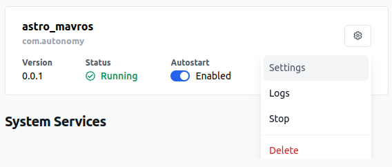
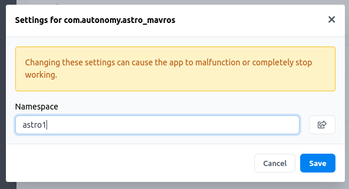

Freefly Astro
IP Reservations
| Device Name | Username | IP Address | Password |
|---|---|---|---|
| astro1 | 192.168.1.121 | ||
| astro2 | 192.168.1.122 | ||
| astro3 | 192.168.1.123 |
Status Codes
| Value | Field Name | Description |
|---|---|---|
| 0 | MAV_STATE_UNINIT | Uninitialized system, state is unknown. |
| 1 | MAV_STATE_BOOT | System is booting up. |
| 2 | MAV_STATE_CALIBRATING | System is calibrating and not flight-ready. |
| 3 | MAV_STATE_STANDBY | System is grounded and on standby. It can be launched any time. |
| 4 | MAV_STATE_ACTIVE | System is active and might be already airborne. Motors are engaged. |
| 5 | MAV_STATE_CRITICAL | System is in a non-normal flight mode (failsafe). It can however still navigate. |
| 6 | MAV_STATE_EMERGENCY | System is in a non-normal flight mode (failsafe). It lost control over parts or over the whole airframe. It is in mayday and going down. |
| 7 | MAV_STATE_POWEROFF | System just initialized its power-down sequence, will shut down now. |
| 8 | MAV_STATE_FLIGHT_TERMINATION | System is terminating itself (failsafe or commanded). |
Manual
Mavros Installation
- Install Auterion CLI (Also see Auterion CLI Reference)
pip3 install auterion-cli
- Make sure the Astro is connected to WiFi or USB-C and run
auterion-cli device discover. The Astro should show up in the list with a serial and IP address. Example output:
$ auterion-cli device discover
Found devices
selected serial version addresses
---------- --------- --------- -----------------
131502818 v3.5.8 {'192.168.1.121'}
Note: Use 'device select' command to select a device to interact with
Use 'device deselect' command to reset selection
- To connect auterion-cli to the astro, run
auterion-cli device select [serial]. Example:
$ auterion-cli device select 131502818
Selected device with ID 131502818 on address 192.168.1.121
- Clone and build astro_mavros package from GitLab
git clone https://uflautonomypark@bitbucket.org/autonomy-park-air-team/astro_mavros.git
cd astro_mavros && auterion-cli app build
- Install astro_mavros build to selected Astro
auterion-cli app install build/com.autonomy.astro_mavros.auterionos
You should see the following output, indicating the install was successful.
Installing artifact build/com.autonomy.astro_mavros.auterionos
Looking for the update artifact
Check if your device is online...
API: v2.2
Uploading artifact: 246Mit [00:19, 12.9Mit/s]
Waiting for the device to complete the installation
The device has been updated successfully
- Now, navigate to the Astro's IP in a web browser, for example, http://192.168.1.121 for Astro 1, and go to the Apps section.
- The astro_mavros application should now be listed. Click the gear icon, and select Settings.

- Set the namespace for the Mavros ROS2 node corresponding to the current Astro.

- Finally, restart the astro_mavros app by clicking Stop and then Start in the gear icon menu. You should now see namespaced Astro topics show up when you run
ros2 topic list, i.e.,
$ ros2 topic list
/astro1/actuator_control
/astro1/adsb/send
/astro1/adsb/vehicle
/astro1/altitude
/astro1/battery
/astro1/cam_imu_sync/cam_imu_stamp
/astro1/camera/image_captured
/astro1/cellular_status/status
/astro1/companion_process/status
/astro1/debug_value/debug
/astro1/debug_value/debug_float_array
...
- Verify that messages are being published by echoing an active topic, i.e.,
$ ros2 topic echo /astro1/battery
header:
stamp:
sec: 1728658560
nanosec: 149730930
frame_id: ''
voltage: 22.83100128173828
temperature: 0.0
current: -0.3400000035762787
charge: .nan
capacity: .nan
design_capacity: .nan
percentage: 0.5799999833106995
power_supply_status: 2
power_supply_health: 0
power_supply_technology: 3
present: true
cell_voltage:
- 3.81000018119812
- 3.81000018119812
- 3.808000087738037
- 3.8030002117156982
- 3.8010001182556152
- 3.7990002632141113
cell_temperature: []
location: id0
serial_number: ''